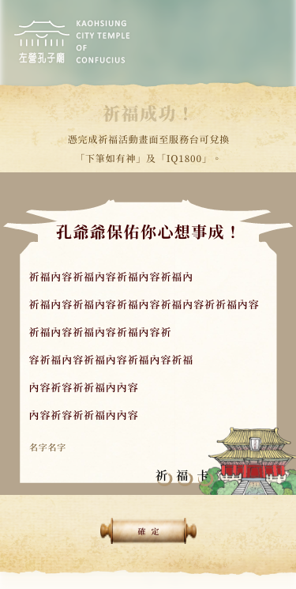

高雄市孔子廟祭孔問答活動站
工作事項：視覺設計、HTML與SCSS切版
使用工具與軟體：Adobe Photoshop、Adobe Xd、HTML、SCSS
【網站介紹】
每年國曆 9月28日為「孔子誕辰紀念日」，高雄市亦遵循古禮舉行祭孔「釋奠」典禮， 以紀念孔子並表彰教師對於作育英才的貢獻。 現今高雄市所舉辦的釋奠典禮一直是全台最富有特色的祭孔儀節之一，在釋奠典禮的鐘鼓樂聲中， 舉行啟扉、迎神、進饌、上香、獻帛、獻爵、獻花、飲褔、受胙及送神等儀節，典禮隆重莊嚴， 八佾舞由64名佾生共同演譯，鐘鼓樂聲飄揚，場面盛大。
【製作過程】

測驗頁面有做進度條顯示目前進度和點選答案欄位有保留空間較好點選

祈福成功頁可以兌換獎品故提醒使用者保留畫面
祈福填寫頁若未填寫會跳窗提醒填寫
首頁設計稿